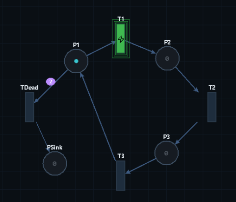
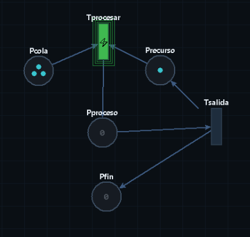
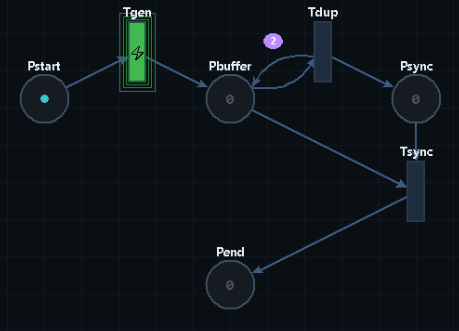

Presentado por:
Jeison Alexis Rodriguez Angarita CC 1005236073
Daniel Eduardo Davila Quintero CC 1092730371
Presentado a: Jorge Omar Portilla Jaimes
Asignatura: Modelado de Sistemas Discretos
El presente proyecto tomó como punto de partida el proyecto existente hecho en clase en Python orientado al dibujo interactivo de redes de Petri y se extendio con un conjunto de funcionalidades de análisis formal. El objetivo principal fue proporcionar al usuario no solo la posibilidad de construir redes visualmente, sino también de verificar propiedades de comportamiento directamente desde la interfaz gráfica, sin necesidad de herramientas externas.
Una red de Petri es una tupla N = (P, T, F, W, M₀) donde:
Una transición t ∈ T está habilitada bajo un marcado M si, para cada lugar de entrada p con arco hacia t, se cumple M(p) ≥ W(p, t). Al disparar t, el marcado evoluciona restando los tokens consumidos y sumando los producidos.
El problema de alcanzabilidad pregunta si existe una secuencia de disparos que lleve desde M₀ hasta un marcado objetivo exacto Mₓ.
La cobertura, en cambio, pregunta si existe un marcado alcanzable M' tal que M'(p) ≥ Mₓ(p) para todo lugar p. Este criterio es más débil: no exige igualdad exacta.
El árbol de cobertura (o árbol de Karp-Miller) es una estructura finita que representa de forma compacta el conjunto de cobertura de una red, incluso cuando el espacio de estados es infinito. Su construcción sigue un proceso BFS o DFS sobre marcados, con la siguiente regla de aceleración: si en el camino desde la raíz hasta el nodo actual existe un ancestro con marcado M_anc tal que M_actual ≥ M_anc, entonces los lugares que han crecido se elevan al símbolo ω (omega), que representa un valor potencialmente ilimitado.
La presencia de ω en cualquier nodo del árbol indica que el lugar correspondiente no está acotado. Los duplicados se detectan comparando nodos con marcados ya presentes en el árbol, lo que garantiza la terminación del algoritmo.
El comportamiento de la red puede expresarse matricialmente. Se definen:
C⁻[p][t] es el peso del arco de p a t.C⁺[p][t] es el peso del arco de t a p.La ecuación de estado es M' = M + C · σ, donde σ es el vector de disparos. En la implementación, esta representación matricial se utiliza en el módulo engine.py para verificar de forma eficiente si una transición está habilitada y para calcular el marcado resultante de un disparo.
El proyecto base ofrecía capacidades de dibujo: añadir lugares, transiciones y arcos sobre un lienzo interactivo, asignar tokens iniciales y guardar o cargar la red en formato. La lógica interna de la red estaba encapsulada en model.py.
Las extensiones desarrolladas son:
engine.py: se amplió con métodos para el cálculo matricial de habilitación y disparo, y para la búsqueda BFS sobre el espacio de estados.coverage.py: módulo nuevo que implementa la construcción del árbol de cobertura con aceleración ω y detección de nodos duplicados.analysis.py: módulo nuevo que agrupa todas las funciones de análisis formal (verificación de secuencias, alcanzabilidad, cobertura, bloqueos, cuellos de botella, vivacidad y acotación).gui.py: se incorporaron botones en el panel lateral de la interfaz para invocar cada función de análisis y mostrar los resultados en cuadros de diálogo, ademas de un cambio de estilo.La integración sigue un diseño en capas. El módulo model.py expone la estructura de la red; engine.py opera sobre ella mediante cálculo matricial; coverage.py consume el motor para construir el árbol; y analysis.py orquesta ambos mecanismos.
El enfoque híbrido es especialmente relevante en la función de alcanzabilidad exacta: antes de ejecutar la búsqueda BFS, se consulta el árbol de cobertura para detectar si la red es no acotada. Si lo es y la búsqueda BFS alcanza su límite de estados o profundidad sin encontrar la respuesta, el sistema devuelve "no sé" en lugar de un falso negativo, evitando así conclusiones incorrectas.
Dada una secuencia de transiciones especificada por el usuario, la función la simula paso a paso desde el marcado inicial. Si alguna transición no está habilitada en el marcado actual, se informa el número del paso fallido y el marcado en ese instante, permitiendo al usuario identificar con precisión el punto de error. Si la secuencia completa es válida, se muestra el marcado final alcanzado.
Implementa una búsqueda BFS sobre el grafo de marcados alcanzables. Para controlar la explosión de estados, se establecen dos límites configurables: un límite de profundidad (máximo de disparos desde el inicio) y un límite de número de estados explorados. Si el marcado objetivo se encuentra, se confirma su alcanzabilidad. Si la búsqueda se agota sin encontrarlo y la red es detectada como no acotada por el árbol de cobertura, se reporta "no sé". Si la red es acotada y el marcado no aparece, se concluye que no es alcanzable.
Utilizando el árbol de cobertura construido por coverage.py, se verifica si existe algún nodo cuyo marcado cubre (es decir, es componente a componente mayor o igual que) el marcado objetivo indicado por el usuario. La presencia de ω en un lugar se interpreta como que ese lugar puede tomar cualquier valor, lo que amplía el conjunto de marcados cubiertos.
La función recorre el espacio de estados explorado (o el árbol de cobertura) y verifica si existe algún marcado en el que ninguna transición esté habilitada. De encontrar uno, se reporta ese marcado como estado de bloqueo (deadlock). Si no se encuentra ninguno dentro del espacio explorado, se indica que no se detectaron bloqueos.
Se analiza la distribución de tokens en cada lugar a lo largo del espacio de estados explorado. Se calcula el promedio de tokens por lugar y se identifican aquellos cuya carga supera un factor de umbral (por defecto, 2× el promedio). Estos lugares se reportan como posibles cuellos de botella, ya que concentran desproporcionadamente los recursos del sistema.
Durante la exploración del espacio de estados, se registra qué transiciones han sido habilitadas al menos una vez. Aquellas que nunca resultan habilitadas en ningún marcado alcanzable explorado se clasifican como transiciones muertas. Esta propiedad es un indicador crítico de partes del modelo que nunca podrán ejecutarse, lo que generalmente señala un error de diseño.
La acotación se determina directamente a partir del árbol de cobertura: si en cualquier nodo del árbol aparece el símbolo ω para algún lugar, ese lugar se considera no acotado, lo que implica que la red en su conjunto tampoco lo es. Si el árbol se construye completamente sin que aparezca ω, la red se clasifica como acotada.
La búsqueda en anchura explora sistemáticamente todos los marcados alcanzables desde M₀, manteniendo un conjunto de estados visitados para evitar revisitar marcados ya procesados (poda por estados visitados). Dos parámetros de corte —límite de profundidad y límite de número de estados— evitan que la exploración se vuelva intratable ante redes de gran espacio de estados. Este método garantiza la corrección de la respuesta dentro de los límites establecidos.
El árbol de cobertura se construye expandiendo marcados e introduciendo aceleraciones ω cuando se detecta crecimiento estrictamente monotónico en el camino desde la raíz. Los nodos duplicados (marcados ya existentes en el árbol) se detectan mediante comparación directa y no se expanden nuevamente, garantizando la terminación. El árbol resultante es finito incluso para redes con espacio de estados infinito.
La combinación de ambos métodos es el aporte técnico más relevante del proyecto. El árbol de cobertura actúa como oráculo para la búsqueda BFS: si el árbol detecta no acotación, la incapacidad del BFS de encontrar un marcado objetivo dentro de sus límites no puede interpretarse como prueba de no alcanzabilidad, por lo que el sistema responde honestamente con "no sé". Esto evita falsos negativos y hace el análisis más robusto.
Se diseñaron tres redes de prueba representativas de distintos comportamientos.
Ciclo con Transicion Muerta

Cola-Recurso

Buffer de Red

La distinción entre alcanzabilidad exacta y cobertura es, conceptualmente, la diferencia entre exactitud y aproximación conservadora. La alcanzabilidad exacta responde si un marcado específico es literalmente alcanzable; la cobertura responde si existe un marcado al menos tan rico en tokens como el objetivo. Un resultado positivo de cobertura no implica alcanzabilidad exacta: se puede cubrir un marcado [2, 0] si existe [3, 0], pero [2, 0] podría no ser alcanzable directamente.
Esta distinción es especialmente evidente en la red del bucle multiplicador: no se puede determinar si [0, 5, 0] es exactamente alcanzable, pero la cobertura confirma que cualquier cantidad de tokens en P2 puede ser cubierta, lo cual es igualmente informativo para muchos propósitos prácticos.
| Aspecto | Alcanzabilidad exacta | Cobertura (árbol) |
|---|---|---|
| Precisión | Exacta, sin ambigüedad | Aproximada (cubrir ≠ alcanzar) |
| Manejo de redes infinitas | No aplica directamente | Siempre termina |
| Detecta no acotación | No (solo constata límite) | Directamente mediante ω |
| Proporciona secuencia | Puede reconstruirse | No |
| Riesgo de explosión | Alto en redes no acotadas | Moderado (ω limita expansión) |
| Respuesta ante incertidumbre | "No sé" (con enfoque híbrido) | Siempre responde |
O(|R|) en el número de marcados alcanzables |R|, que en el peor caso es exponencial en el número de lugares y tokens. Para redes no acotadas, |R| puede ser infinito, de ahí la necesidad de los límites de corte.El desarrollo de este proyecto puso de manifiesto que cubrir y alcanzar son conceptos fundamentalmente distintos, y que confundirlos puede llevar a conclusiones erróneas en el análisis de sistemas. El árbol de cobertura demostró ser una herramienta poderosa y complementaria: donde la búsqueda exacta falla por limitaciones computacionales, el árbol proporciona información cualitativa valiosa sobre el comportamiento a largo plazo del sistema.
Igualmente importante fue la lección sobre la honestidad computacional: en lugar de reportar falsos negativos cuando la búsqueda BFS se agota, el sistema responde "no sé", reconociendo los límites del análisis. Esta transparencia es esencial en herramientas de verificación formal.
Informe generado como parte del trabajo de extensión del proyecto de redes de Petri. Todas las funcionalidades descritas corresponden exclusivamente a las implementadas en los módulos model.py, engine.py, coverage.py, analysis.py y gui.py.